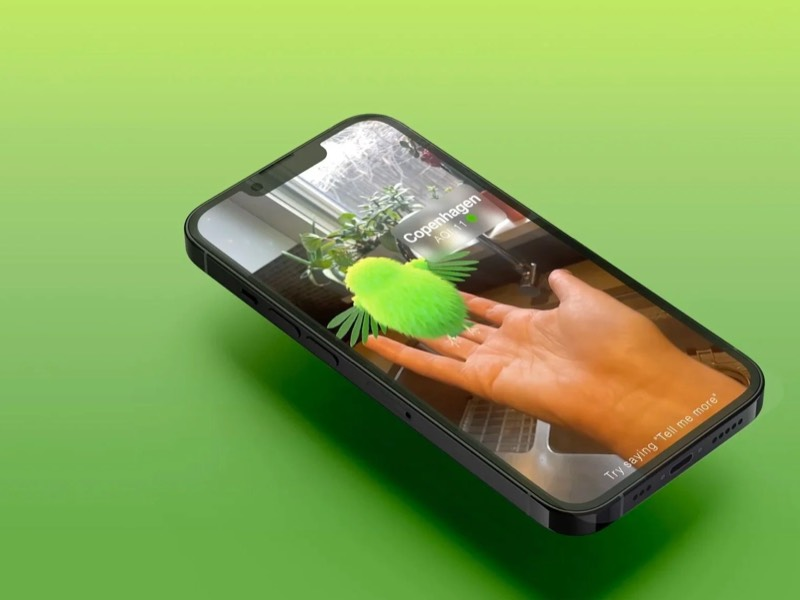
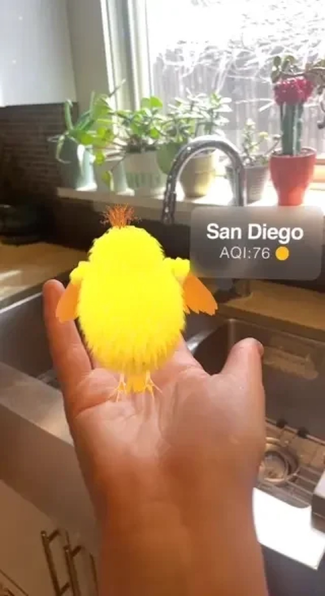

Environmental information delivered by a friend, built for SPACE10, IKEA's innovation lab
Bio Companion is an augmented reality concept built with SPACE10 to explore how we might interact with environmental data. It uses hand tracking, voice commands, external air-quality APIs, and a real-time 3D character. You hold out your hand, and a small digital bird lands in your palm to share the day's air quality readings.
I was the lead engineer. I designed the architecture and built it. The prototype runs in Snap's AR ecosystem and presents air-quality readings as a personal interaction rather than a clinical readout.

